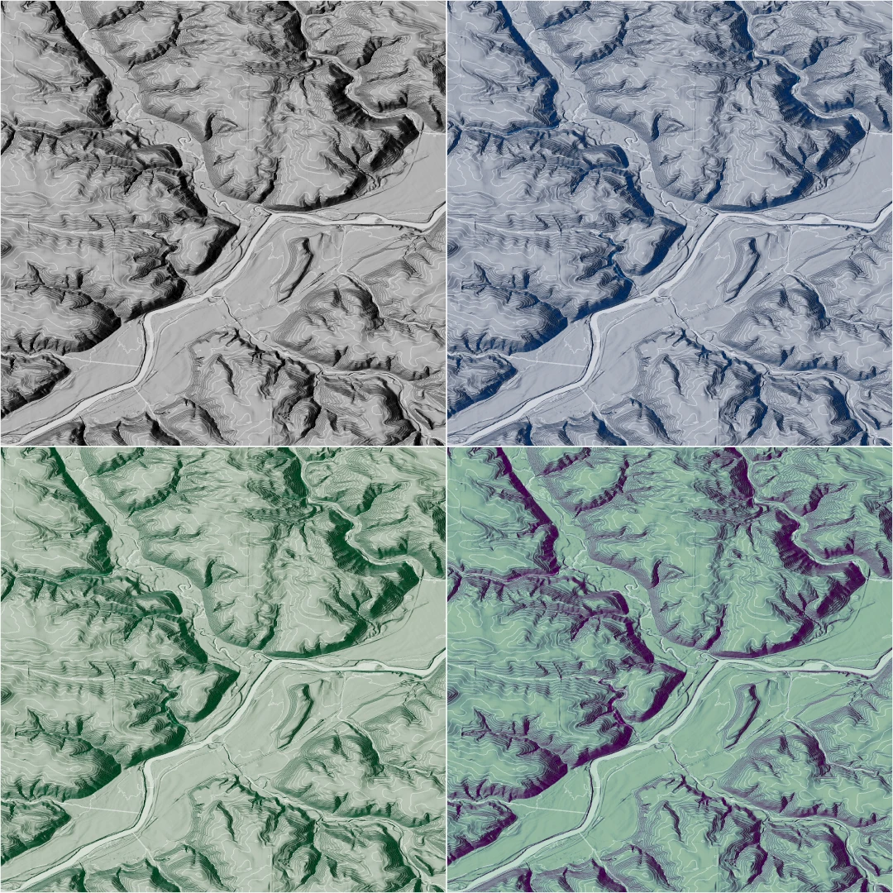
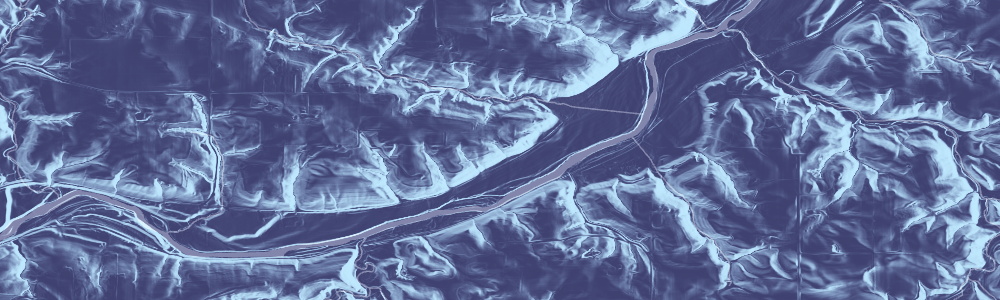
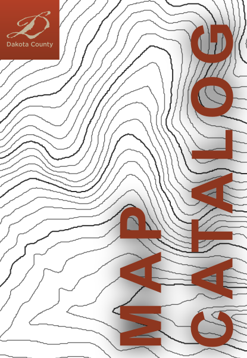
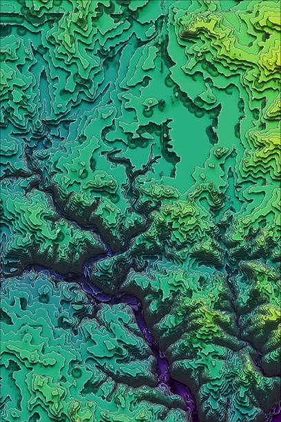

Minnesota Lidar
The Minnesota Geospatial Advisory Council's 3D Geomatics Committee Lidar Hub.
Explore the hub
GIS Manager · Dakota County Office of GIS
Building useful maps, geospatial tools, and terrain visualizations for Minnesota communities.
A few projects at the intersection of public service, mapping, and visual storytelling.

The Minnesota Geospatial Advisory Council's 3D Geomatics Committee Lidar Hub.
Explore the hub
A public catalog for discovering Dakota County maps and geospatial resources.
Browse the catalog
A recreation of John Nelson's trippy, AI-generated terrain contour visualization.
Watch the process